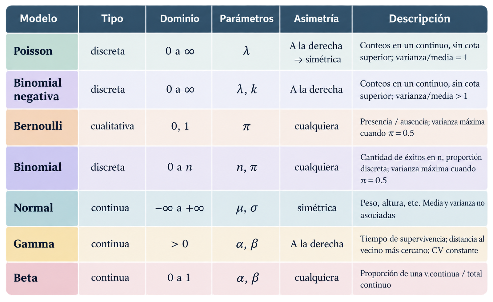
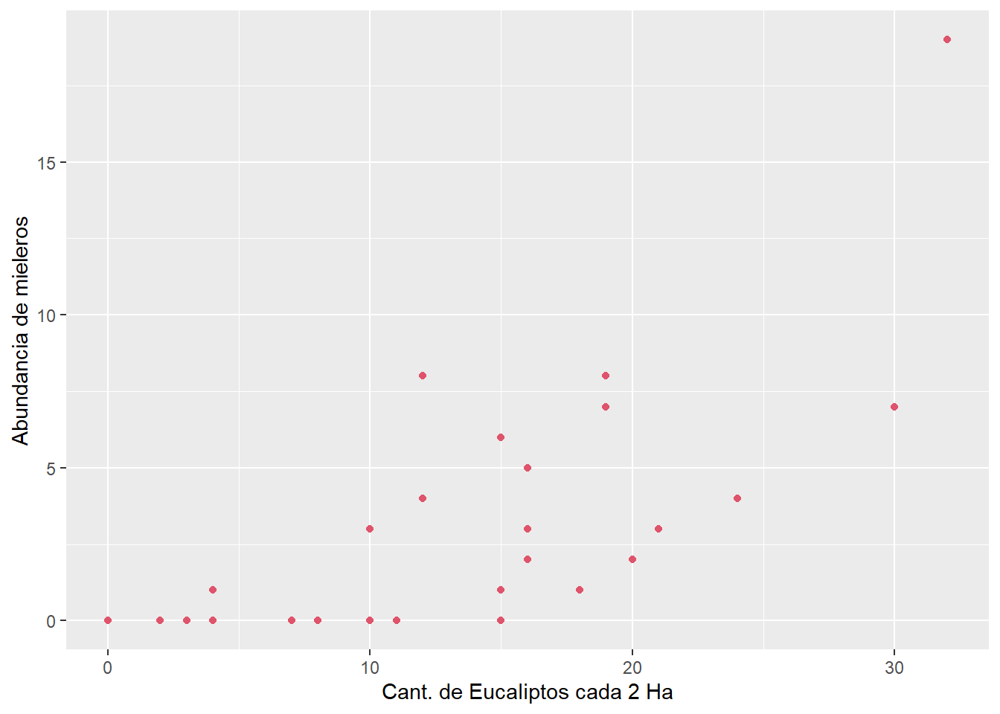
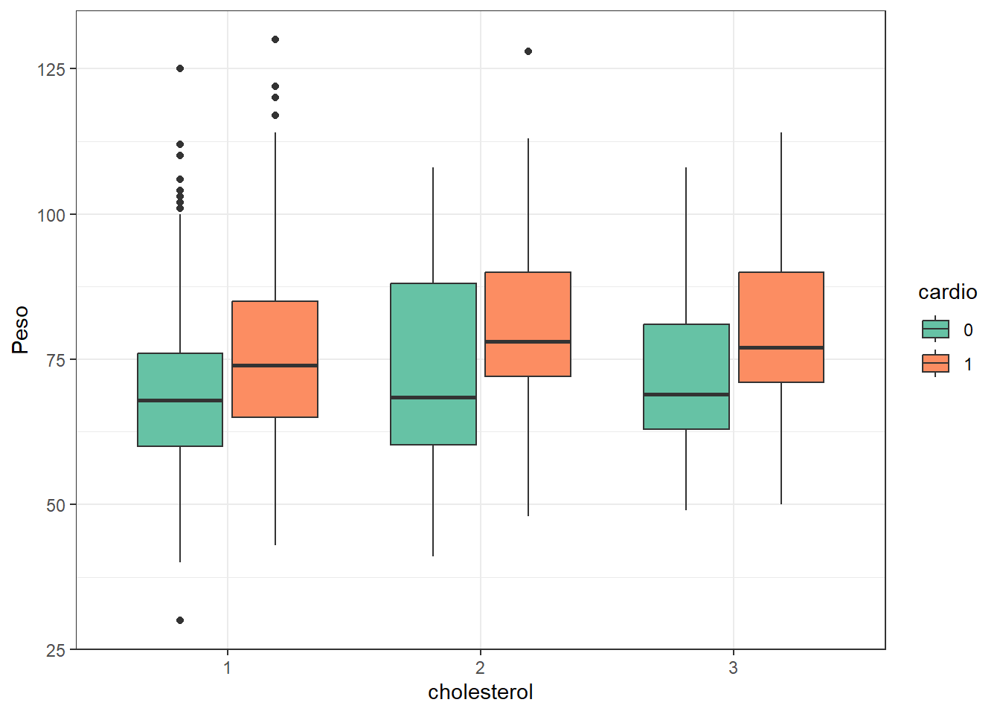
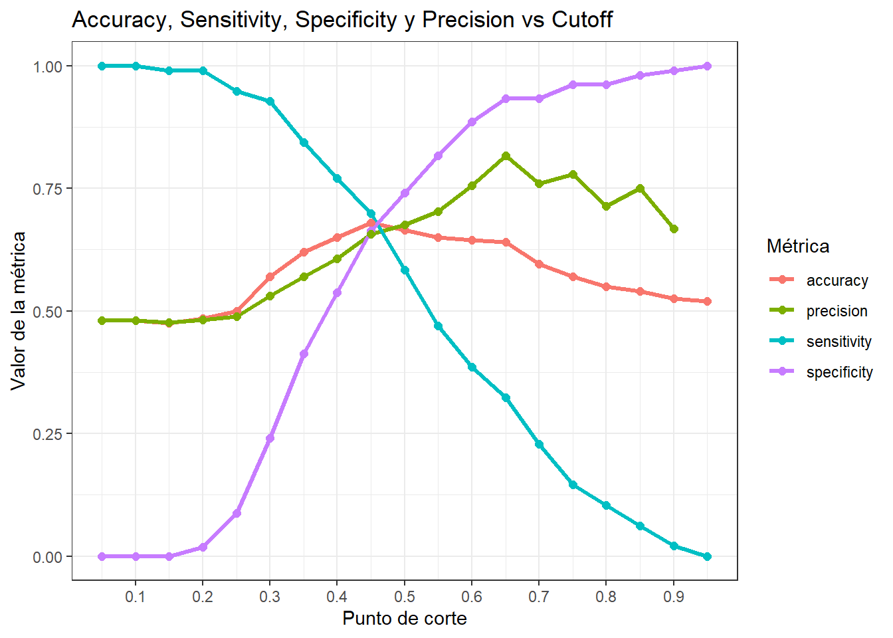
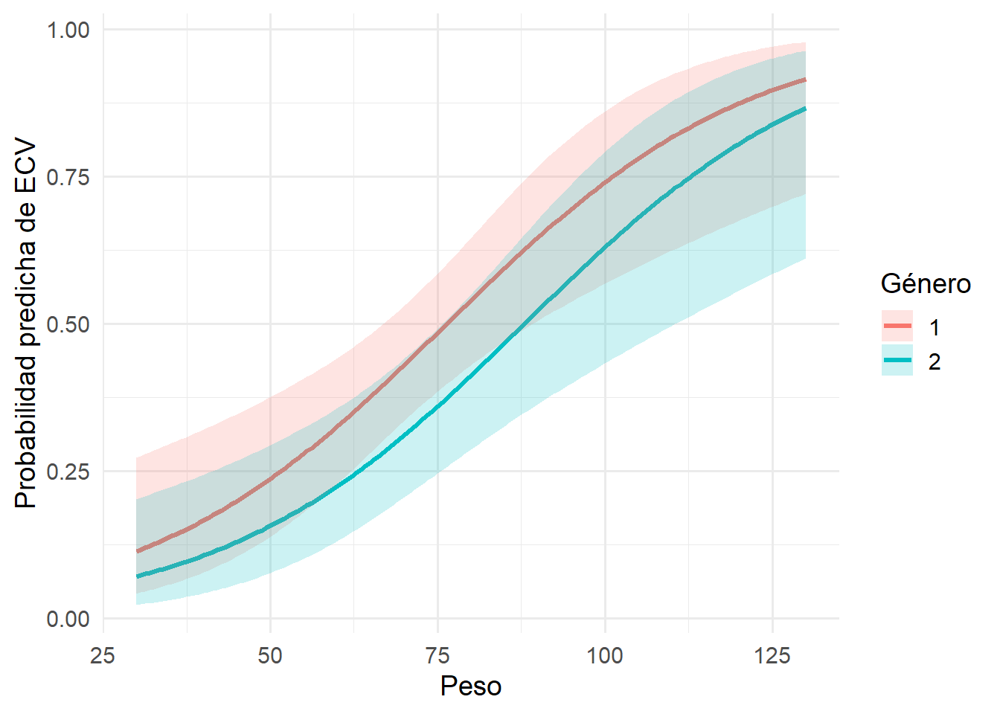

knitr::opts_chunk$set(warning =FALSE, message =FALSE)# Cargamos las librerías que vamos a utilizarlibrary(tidyverse)library(tidymodels)library(modelr)library(GGally)library(pROC)library(cowplot)library(OneR)library(rlang)library(caret)set.seed(15)
Generalidades de los GLM
Un GLM es un modelo lineal para la esperanza transformada de una variable respuesta que tiene una distribución de probabilidad de la familia exponencial. Esto permite limitar los valores de Y al rango esperado para la variable (por ejemplo valores mayores o iguales a 0 para conteos o entre 0 y 1 para proporciones). La estimación de los parámetros se hace por máxima verosimilitud e iteraciones. Son modelos lineales ya que la variable respuesta es descripta a través de una función de enlace por una combinación lineal de los predictores X.

Imagen adaptada de la clase de GLM de Adriana Perez
Los 3 componentes
Un componente aleatorio que identifica a la variable respuesta Y y sigue una de las distribuciones de la familia exponencial.
Un componente o predictor lineal que identifica a un conjunto de predictoras X en una función lineal.
Una función de enlace, que describe cómo se relacionan el valor esperado o medio de la variable respuesta con el componente lineal. Debe restringir los valores posibles de la variable respuesta a su rango teórico.
ggplot(mieleros, aes(y = Minerab, x = Eucs)) +geom_point(colour=2)+xlab("Cant. de Eucaliptos cada 2 Ha") +ylab("Abundancia de mieleros")

Propongo el modelo: \[Y \sim Poisson(\mu) \] con \[
\mu_i = e^{\beta_0 + \beta_1 x_i}
\] o \[\log(\mu) = \beta_0 + \beta_1X \]\[E(Y_i) = Var(Y_i) = \lambda_i = \mu_i \]
Modelo en la escala del predictor lineal
\[log(E(Y_i)) = \beta_0 + \beta_1X_i \]
Modelo en la escala de la variable respuesta
\[E(Y_i) = \mu_i = e^{\beta_0 + \beta_1X_i} \]
Código
library(lme4)# glmmTMB si se quiere trabajar con modelos mixtospoisson <-glm(Minerab~ Eucs, data=mieleros,family ="poisson")summary(poisson)
Call:
glm(formula = Minerab ~ Eucs, family = "poisson", data = mieleros)
Coefficients:
Estimate Std. Error z value Pr(>|z|)
(Intercept) -0.87621 0.28279 -3.098 0.00195 **
Eucs 0.11398 0.01243 9.169 < 2e-16 ***
---
Signif. codes: 0 '***' 0.001 '**' 0.01 '*' 0.05 '.' 0.1 ' ' 1
(Dispersion parameter for poisson family taken to be 1)
Null deviance: 150.545 on 30 degrees of freedom
Residual deviance: 63.318 on 29 degrees of freedom
AIC: 121.47
Number of Fisher Scoring iterations: 5
El modelo ajustado es:
\[
\log(\mu)=\beta_0+\beta_1 x
\]
donde:
\(\mu = E[Y|X=x]\) es la cantidad esperada de mieleros,
\(x\) es la cantidad de eucaliptos.
Con las estimaciones obtenidas:
\[
\log(\mu)= -0.876 + 0.114x
\]
Interpretación de \(\beta_0\):
\[
\beta_0=-0.876
\]
representa el logaritmo de la cantidad media esperada de mieleros cuando \(x=0\), es decir, cuando no hay eucaliptos.
Aplicando exponencial:
\[
\mu(0)=e^{-0.876}\approx 0.42
\]
Por lo tanto, el modelo estima aproximadamente 0.42 mieleros cuando no hay eucaliptos.
Interpretación de \(\beta_1\):
\[
\beta_1=0.114
\]
Como el vínculo es logarítmico, el efecto es multiplicativo:
\[
e^{0.114}\approx 1.12
\]
Esto significa que por cada eucalipto adicional, la cantidad esperada de mieleros aumenta aproximadamente un 12%.
Supuestos
Independencia entre observaciones
Linealidad para las variables explicatorias cuantitativas a escala del predictor lineal.
Ausencia de sub o sobredispersión. La varianza de la variable es mayor o menor, respectivamente, a la que se espera según la distribucion de Poisson. Esto provoca estimaciones sesgadas de los errores estándar de los coeficientes de las variables explicatorias.
Dispersion test
data: poisson
z = 2.073, p-value = 0.03817
alternative hypothesis: true dispersion is not equal to 1
sample estimates:
dispersion
2.337731
Regresión Logística
Presentación del caso de estudio
Vamos a trabajar con una base de datos extraída de Kaggle. Es una base de datos que consiste de 69301 registros de pacientes a los que se les registró 12 caracteristicas asociadas a una enfermedad cardiovascular.
El objetivo de esta clase es utilizar diferentes modelos de regresión logística para predecir la presencia o ausencia de enfermedad cardiovascular (ECV) utilizando los resultados del examen del paciente.
Descripción de los datos
Age: edad del paciente (días)
Height: altura del paciente (cm)
Weight: peso del paciente (kg)
Gender: sexo biológio del paciente (1: mujer, 2:varón)
df_split <-initial_split(df,prop =0.8)train<- df_split %>%training()test <- df_split %>%testing()# Número de datos en trainpaste0("Total del dataset de entrenamiento: ", nrow(train))
[1] "Total del dataset de entrenamiento: 800"
Analizamos cómo quedo el balance de clases para cardio en cada dataset.
Código
# calculamos la distribución de clase en cada datasettrain_ <- train %>%group_by(cardio) %>%summarise(numero_casos=n()) %>%mutate(prop =round(prop.table(numero_casos)*100,2))test_ <- test %>%group_by(cardio) %>%summarise(numero_casos=n()) %>%mutate(prop =round(prop.table(numero_casos)*100,2))# armamos tabla conjunta para graficardistrib =cbind(rbind(train_, test_), dataset =c("train", "train", "test", "test"))# graficamos las distribucionesggplot(distrib, aes(x = cardio, y = prop, fill =factor(cardio), label = prop)) +geom_bar(stat="identity", position ="dodge") +facet_wrap(~ dataset) +theme(axis.text.x =element_text(angle =90, hjust =1)) +labs(x ="", y ="Proporción en %", title ="Proporción de cardio por dataset") +guides(fill=guide_legend(title="cardio"))+theme_bw() +scale_fill_brewer(palette="Set2")
La funcíón glm() nos permite crear un modelo lineal generalizado (Generalized Linear Model). Al igual que la función lm() toma como argumentos una formula y los datos pero también se debe especificar el argumento family: indicamos la distribución del error y la función link que vamos a utilizar en el modelo.
Algunas familias son:
Binomial: link=logit
Poisson: link=log
Gaussiana: link=identidad
Como estamos trabajando con un fenómeno que suponemos tiene una distribución binomial, así lo especificamos en el parámetro family.
Realizamos un modelo de regresión logística para predecir la si el paciente tiene una ECV en función de weight y gender.
Se espera un aumento de 0.03 unidades en el log de odds por cada aumento de 1kgr en el peso (manteniendo el resto de las variables constantes). La probabilidad de contraer una ECV aumenta con el aumento de peso del paciente.
\(\ OR = e^{\beta_{weight}}= e^{0.03}= 1.03\)
Por cada aumento de 1 kgr se estima que el odds de contraer una ECV aumente 3.05%
\(\ OR = {\frac{Odds_{varón}}{Odds_{mujer}}}= e^{\beta_{género}}= e^{-0.02}\)
El odds ratio para la variable género es 0.98, lo que indica que los varones tienen un 2 % menos de odds de presentar una ECV que las mujeres, manteniendo constante el peso. En consecuencia, ser mujer se asocia con un riesgo mayor riesgo relativo de ECV.
Devianza
Es una medida de la falta de ajuste del modelo. Cuanto menor es la devianza residual, mejor se ajusta el modelo.
Se generan la combinación de todos los modelos posibles a partir de las variables gender, weight, y cholesterol. Antes hacemos un boxplot con weight, cholesterol y cardio.
Código
ggplot(train, aes(x = cholesterol, y = weight, fill =factor(cardio))) +geom_boxplot() +labs(x ="cholesterol", y ="Peso", fill ="cardio") +theme_bw() +scale_fill_brewer(palette="Set2")

Código
vars <-c("gender", "weight", "cholesterol")# Crear todas las combinaciones posibles de predictorescombs <-unlist(lapply(1:length(vars), function(i) combn(vars, i, simplify =FALSE)),recursive =FALSE)# Crear una lista de fórmulasformulas <-map(combs, ~reformulate(termlabels = .x, response ="cardio"))formulas
Hasta ahora hemos evaluado el modelo de manera general, pero el resultado final del modelo debe consistir en asignar a la persona una clase predicha. En nuestro caso debemos establecer un punto de corte según el cual vamos a separar a los pacientes con ECV de los que no tienen ECV.
Probamos varios puntos de corte y graficamos el accuracy, la sensibilidad o recall, la especificidad y la precisión para cada uno de ellos.
Clases predichas / Clases
Negativa
Positiva
Negativa
True Neg
False Neg
Positiva
False Pos
True Pos
Recordemos que:
\(accuracy = \frac{TP+TN}{TP+FP+FN+TN}\)
\(sensitivity = recall = \frac{TP}{TP+FN}\)
\(specificity = \frac{TN}{TN+FP}\)
\(precision = \frac{TP}{TP+FP}\)
Evaluando en test
Código
# Supongamos que 'mejor_modelo'best_model <-glm(data = test, cardio ~ weight + gender+ cholesterol, family ='binomial')# generamos las predicciones para el mejor modelotest_model <-tibble(.fitted =predict(best_model, newdata = test, type ="response"),cardio = test$cardio)# generamos una funcion que evalua diferentes umbrales y calcula las metricasprediction_metrics <-function(cutoff, predictions) { tab <- predictions %>%mutate(predicted_class =factor(if_else(.fitted > cutoff, 1, 0), levels =c(0,1)),cardio =factor(cardio, levels =c(0,1))) cm <-confusionMatrix(tab$predicted_class, tab$cardio, positive ="1")tidy(cm) %>%select(term, estimate) %>%filter(term %in%c('accuracy','sensitivity','specificity','precision')) %>%mutate(cutoff = cutoff)}
Código
# se calculan las metricas para diferentes valores de umbralescutoffs <-seq(0.05, 0.95, 0.05)metricas_df <-map_df(cutoffs, ~prediction_metrics(.x, predictions = test_model)) %>%mutate(term =as.factor(term), estimate =round(estimate, 3))#graficamos los resultadosggplot(metricas_df, aes(x = cutoff, y = estimate, color = term, group = term)) +geom_line(size =1.2) +geom_point(size =2) +scale_x_continuous(breaks =seq(0, 1, by =0.1))+theme_bw() +labs(title ="Accuracy, Sensitivity, Specificity y Precision vs Cutoff",x ="Punto de corte",y ="Valor de la métrica",color ="Métrica" )

¿Cuál seria el umbral adecuado?
Punto de cruce entre sensitivity y specificity dado que se minimizan tanto FP y FN. Útil cuando no hay una clara preferencia por minimizar FP o FN.
Código
sel_cutoff =0.45# calculamos las predicciones sobre el dataset de traintable_train =augment(x = best_model, newdata = train,type.predict='response')# Clasificamos utilizamos el punto de cortetable_train = table_train %>%mutate(predicted_class =if_else(.fitted>sel_cutoff, 1, 0) %>%as.factor(), cardio =factor(cardio))# Creamos la matriz de confusiónconfusionMatrix(table(table_train$predicted_class, table_train$cardio), positive ="1")
Confusion Matrix and Statistics
0 1
0 261 151
1 147 241
Accuracy : 0.6275
95% CI : (0.593, 0.6611)
No Information Rate : 0.51
P-Value [Acc > NIR] : 1.434e-11
Kappa : 0.2546
Mcnemar's Test P-Value : 0.862
Sensitivity : 0.6148
Specificity : 0.6397
Pos Pred Value : 0.6211
Neg Pred Value : 0.6335
Prevalence : 0.4900
Detection Rate : 0.3013
Detection Prevalence : 0.4850
Balanced Accuracy : 0.6273
'Positive' Class : 1
Código
# Agregamos la predicciones al dataset de testeotable_test =augment(x = best_model, newdata=test, type.predict='response') # Clasificamos utilizando el punto de cortetable_test = table_test %>%mutate(predicted_class =if_else(.fitted>sel_cutoff, 1, 0))# Creamos la matriz de confusiónconfusionMatrix(table(table_test$predicted_class, table_test$cardio), positive ="1")
Confusion Matrix and Statistics
0 1
0 69 29
1 35 67
Accuracy : 0.68
95% CI : (0.6105, 0.744)
No Information Rate : 0.52
P-Value [Acc > NIR] : 3.184e-06
Kappa : 0.3605
Mcnemar's Test P-Value : 0.532
Sensitivity : 0.6979
Specificity : 0.6635
Pos Pred Value : 0.6569
Neg Pred Value : 0.7041
Prevalence : 0.4800
Detection Rate : 0.3350
Detection Prevalence : 0.5100
Balanced Accuracy : 0.6807
'Positive' Class : 1
El 69.8 % de los casos positivos reales fueron correctamente identificados. (Probabilidad de detectar correctamente una ECV si la persona realmente la tiene.)
El 66.4 % de los casos negativos fueron correctamente identificados como tales.
De todos los que el modelo predijo como negativos, el 70.4 % realmente no tienen ECV.
Los gráficos de residuos vs predichos no son informativos para evaluar el ajuste del modelo, ya que la variable solo toma dos valores.
En el eje X se observa la probabilidad predicha de contrarer una ECV.
En el eje Y se observa la frecuencia de clase, el cociente entre cantidad de individuos con ECV y el total de pacientes.
La línea punteada designa la igualdad entre probabilidad predicha y frecuencia de clase.
Los círculos, que se construyen de la siguiente manera:
Se dividen a las observaciones en bins en base a la probabilidad predicha
Se calcula la frecuencia de clase para cada bin
En base a estas dos coordenadas se ubica al círculo en el gráfico
El número y tamaño indican la cantidad de observaciones en dicho grupo
Aquellos círculos que se ubiquen por encima de la línea punteada indican que el modelo está subestimando la probabilidad para dichos grupos. Mientras que si los círculos se ubican por debajo el modelo está sobreestimando la probabilidad para dichos grupos.
¿Para qué valores parece existir una sobreestimación de la probabilidad? ¿Para cuáles subestimación?
Por cada aumento de una unidad de peso, los odds de presentar una ECV aumentan un 5%, manteniendo constantes el resto de las variables. Al no incluir el 1 se puede decir que el efecto es estadísticamente significativo
Conclusión: el peso se asocia positivamente con la probabilidad de contraer ECV.
gender
Aunque parece haber una tendencia a menor riesgo en varones, el intervalo incluye al 1, por lo tanto no hay evidencia estadística suficiente para afirmarlo.
cholesterol
Los pacientes con colesterol en nivel 3 tienen 3.56 veces más odds de presentar ECV que aquellos con colesterol normal (nivel base). Es decir, los odds de tener ECV se incrementan en un 256% en comparación con el grupo de referencia, manteniendo constantes las demás variables del modelo.
A continuación se muestra las curvas que representan la probabilidad predicha de presentar una ECV en función del peso, comparando varones y mujeres y manteniendo fijo el colesterol en el nivel “1”.
Código
# Crear nueva grilla de datosnew_data <-expand.grid(weight =seq(min(train$weight), max(train$weight), length.out =150),cholesterol ="1", # fijamos un valor de colesterolgender =levels(train$gender))# Obtener predicciones en escala del logit con error estándarpred <-predict(best_model, newdata = new_data, type ="link", se.fit =TRUE)# Calcular límites de confianza en la escala del logitnew_data <- new_data %>%mutate(fit = pred$fit,se.fit = pred$se.fit,lower = fit -1.96* se.fit,upper = fit +1.96* se.fit,predicted =plogis(fit), # transformar a probabilidadlower_ci =plogis(lower),upper_ci =plogis(upper) )# Graficar con bandas de confianzaggplot(new_data, aes(x = weight, y = predicted, color = gender, fill = gender)) +geom_line(size =1.2) +geom_ribbon(aes(ymin = lower_ci, ymax = upper_ci), alpha =0.2, color =NA) +labs(x ="Peso",y ="Probabilidad predicha de ECV",color ="Género",fill ="Género" ) +theme_minimal(base_size =14)

Ejecutar el código
---title: "Modelos Lineales Generalizados (GLM)"author: "Pamela Eugenia Pairo"lang: esformat: html: theme: flatly code-fold: show code-tools: true toc: true toc-location: left---```{r, echo=TRUE, message=FALSE, warning=FALSE}knitr::opts_chunk$set(warning = FALSE, message = FALSE)# Cargamos las librerías que vamos a utilizarlibrary(tidyverse)library(tidymodels)library(modelr)library(GGally)library(pROC)library(cowplot)library(OneR)library(rlang)library(caret)set.seed(15)```# Generalidades de los GLMUn GLM es un modelo lineal para la esperanza transformada de una variable respuesta que tiene una distribución de probabilidad de la familia exponencial. Esto permite limitar los valores de Y al rango esperado para la variable (por ejemplo valores mayores o iguales a 0 para conteos o entre 0 y 1 para proporciones). La estimación de los parámetros se hace por **máxima verosimilitud** e iteraciones. Son modelos lineales ya que la variable respuesta es descripta a través de una función de enlace por una combinación lineal de los predictores X.{}**Los 3 componentes**- Un _componente aleatorio_ que identifica a la variable respuesta Y y sigue una de las distribuciones de la familia exponencial.- Un _componente o predictor lineal_ que identifica a un conjunto de predictoras X en una función lineal.- Una _función de enlace_, que describe cómo se relacionan el valor esperado o medio de la variable respuesta con el componente lineal. Debe restringir los valores posibles de la variable respuesta a su rango teórico.# GLM Poisson```{r}mieleros <-read.csv("nminer.csv")glimpse(mieleros)``````{r}ggplot(mieleros, aes(y = Minerab, x = Eucs)) +geom_point(colour=2)+xlab("Cant. de Eucaliptos cada 2 Ha") +ylab("Abundancia de mieleros")```Propongo el modelo:$$Y \sim Poisson(\mu) $$con$$\mu_i = e^{\beta_0 + \beta_1 x_i}$$o$$\log(\mu) = \beta_0 + \beta_1X $$$$E(Y_i) = Var(Y_i) = \lambda_i = \mu_i $$Modelo en la escala del predictor lineal$$log(E(Y_i)) = \beta_0 + \beta_1X_i $$Modelo en la escala de la variable respuesta$$E(Y_i) = \mu_i = e^{\beta_0 + \beta_1X_i} $$```{r}library(lme4)# glmmTMB si se quiere trabajar con modelos mixtospoisson <-glm(Minerab~ Eucs, data=mieleros,family ="poisson")summary(poisson)```El modelo ajustado es:$$\log(\mu)=\beta_0+\beta_1 x$$donde:- $\mu = E[Y|X=x]$ es la cantidad esperada de mieleros,- $x$ es la cantidad de eucaliptos.Con las estimaciones obtenidas:$$\log(\mu)= -0.876 + 0.114x$$Interpretación de $\beta_0$:$$\beta_0=-0.876$$representa el logaritmo de la cantidad media esperada de mieleroscuando $x=0$, es decir, cuando no hay eucaliptos.Aplicando exponencial:$$\mu(0)=e^{-0.876}\approx 0.42$$Por lo tanto, el modelo estima aproximadamente0.42 mieleros cuando no hay eucaliptos.Interpretación de $\beta_1$:$$\beta_1=0.114$$Como el vínculo es logarítmico, el efecto es multiplicativo:$$e^{0.114}\approx 1.12$$Esto significa que por cada eucalipto adicional,la cantidad esperada de mieleros aumenta aproximadamente un 12%.## Supuestos- Independencia entre observaciones- Linealidad para las variables explicatorias cuantitativas a escala del predictor lineal.- Ausencia de **sub o sobredispersión**. La varianza de la variable es mayor o menor, respectivamente, a la que se espera según la distribucion de Poisson. Esto provoca estimaciones sesgadas de los errores estándar de los coeficientes de las variables explicatorias.```{r}AER::dispersiontest(poisson,alternative ="two.sided")```# Regresión Logística## Presentación del caso de estudioVamos a trabajar con una base de datos extraída de [Kaggle](https://www.kaggle.com/code/robinreni/cardiovascular-disease-eda-detailed/notebook). Es una base de datos que consiste de 69301 registros de pacientes a los que se les registró 12 caracteristicas asociadas a una enfermedad cardiovascular.El objetivo de esta clase es utilizar diferentes modelos de regresión logística para predecir la presencia o ausencia de enfermedad cardiovascular (ECV) utilizando los resultados del examen del paciente.**Descripción de los datos**- Age: edad del paciente (días)- Height: altura del paciente (cm)- Weight: peso del paciente (kg)- Gender: sexo biológio del paciente (1: mujer, 2:varón)- Systolic blood pressure: Presión arterial sistólica- Diastolic blood pressure: Presión arterial diastólica- Cholesterol: colesterol en sangre del paciente (1: normal, 2: por encima de lo normal, 3: muy por encima de lo normal)- Glucose: glucosa (1: normal, 2: por encima de lo normal, 3: muy por encima de lo normal)- Smoking: fuma/no fuma- Alcohol intake: consume alcohol/ no consume alcohol- Physical activity; realiza actividad física/ no realiza actividad física- Cardiovascular disease: variable target (0:no, 1:si)```{r}df <-read.csv("cardio_train.csv", sep =";")colSums(is.na(df))# chequeamos si hay datos faltantes``````{r}sum(duplicated(df))#chequeamos duplicados``````{r}glimpse(df)```## Creación de base de datosSe genera una muestra de tamaño 1000 con la que se realizaran los análisis y se analiza si hay desbalance en la variable respuesta.```{r}df <- df %>%sample_n(1000)df %>%group_by(cardio) %>%summarise(cnt =n()) %>%mutate(freq =round(cnt /sum(cnt), 2))```### Partición de la base de datos```{r}df_split <-initial_split(df,prop =0.8)train<- df_split %>%training()test <- df_split %>%testing()# Número de datos en trainpaste0("Total del dataset de entrenamiento: ", nrow(train))```Analizamos cómo quedo el balance de clases para `cardio` en cada dataset.```{r}# calculamos la distribución de clase en cada datasettrain_ <- train %>%group_by(cardio) %>%summarise(numero_casos=n()) %>%mutate(prop =round(prop.table(numero_casos)*100,2))test_ <- test %>%group_by(cardio) %>%summarise(numero_casos=n()) %>%mutate(prop =round(prop.table(numero_casos)*100,2))# armamos tabla conjunta para graficardistrib =cbind(rbind(train_, test_), dataset =c("train", "train", "test", "test"))# graficamos las distribucionesggplot(distrib, aes(x = cardio, y = prop, fill =factor(cardio), label = prop)) +geom_bar(stat="identity", position ="dodge") +facet_wrap(~ dataset) +theme(axis.text.x =element_text(angle =90, hjust =1)) +labs(x ="", y ="Proporción en %", title ="Proporción de cardio por dataset") +guides(fill=guide_legend(title="cardio"))+theme_bw() +scale_fill_brewer(palette="Set2")``````{r}glimpse(train)```Seleccioamos las variables con las que vamos a trabajar y les asignamos el tipo de dato correspondiente.```{r}cols <-c("age", "height", "weight", "gender", "cholesterol","gluc","cardio")train$gender <-as.factor(train$gender)train$cholesterol <-as.factor(train$cholesterol)train$gluc <-as.factor(train$gluc)test$gender <-as.factor(test$gender)test$cholesterol <-as.factor(test$cholesterol)test$gluc <-as.factor(test$gluc)``````{r}# graficamos con ggpairs coloreando por variable a predecirg <- train %>%mutate(cardio =factor(cardio)) %>%select(all_of(cols)) %>%ggpairs(title ="Correlograma de variables",mapping =aes(colour= cardio),progress =FALSE, lower=list(combo=wrap("facethist", binwidth=0.8))) +theme(axis.text.x =element_text(angle =90, hjust =1)) +theme_bw() +scale_fill_brewer(palette="Set2") +scale_color_brewer(palette="Set2")g```## Recap de Regresión Logística### **Odds**Cociente entre la probabilidad de éxito de un evento y la probabilidad de que no ocurra.$Odds = \frac{P(x)}{1-P(x)}$Ej. si _Odds_ es 3 indica que por cada 4 repeticiones del evento se espera que ocurran 3 y que una no ocurra.Odds < 1 : es mas probable que no ocurra a que siOdds = 1 : equiprobabilidadOdds > 1: es mas probable que el evento ocurra a que no.En nuestro caso:$Odds = \frac{391/800}{409/800}= 0.9558 \approx \frac{191}{200}$Por cada 191 pacientes con ECV, 200 no la tienen.## **Logit**$Logit = \log {\frac{P(x)}{1-P(x)}}= \log Odds$## **_Odds Ratio_ (OR)**Es una medida de magnitud de efecto. Si tenemos el siguiente modelo de regresión logística$\log\left(\frac{p}{1 - p}\right) = \beta_0 + \beta_1 X$El odds ratio asociado a la variable $\ X$ es:$\text{OR} = e^{\beta_1}$OR = 1 No hay efectoOR > 1 asociación positivaOR < 1 asociación negativa## Escalas de análisis1- Predictor lineal2- Odds3- Variable respuesta{}## Planteamos el modeloPara evitar los problemas vistos con regresión lineal, usamos la **función logística**.$P(Y=1|X)= \frac{e^{\beta_0 + \sum\limits_{j=1}^p \beta_j X_j}}{1+e^{\beta_0 + \sum\limits_{j=1}^p \beta_j X_j}}$Esta función acota el resultado entre 0 y 1, lo cual es mucho más adecuado para modelar una probabilidad.Luego de hacer algunas operaciones, podemos llegar a la expresión:$\log {\frac{P(x)}{1-P(x)}}= \beta_0 + \sum\limits_{j=1}^p \beta_j X_j$La funcíón `glm()` nos permite crear un modelo lineal generalizado (Generalized Linear Model). Al igual que la función `lm()` toma como argumentos una **formula** y los **datos** pero también se debe especificar el argumento **family**: indicamos la distribución del error y la función link que vamos a utilizar en el modelo. Algunas familias son:* *Binomial*: link=logit* *Poisson*: link=log* *Gaussiana*: link=identidadComo estamos trabajando con un fenómeno que suponemos tiene una distribución binomial, así lo especificamos en el parámetro **family**.Realizamos un modelo de regresión logística para predecir la si el paciente tiene una ECV en función de **weight** y **gender**. $\log {\frac{P(x)}{1-P(x)}}= \beta_0 + \beta_1 weight + \beta_2 age + \beta_2 varón$```{r}# modelo de regresión logística glm1 <-glm(data = train, cardio ~ weight + gender, family ='binomial')# veo los resultadostidy(glm1)glance(glm1)```### Interpretación de los coeficientes del modeloModelo estimado$\log {\frac{P(x)}{1-P(x)}}= -2.71 + 0.03* weight - 0.2*varón$**Peso**Se espera un aumento de 0.03 unidades en el log de odds por cada aumento de 1kgr en el peso (manteniendo el resto de las variables constantes). La probabilidad de contraer una ECV aumenta con el aumento de peso del paciente.$\ OR = e^{\beta_{weight}}= e^{0.03}= 1.03$Por cada aumento de 1 kgr se estima que el odds de contraer una ECV aumente 3.05%**Género**$\ Odds_{varón} = {\frac{Prob_{ECV} /varón}{Prob_{noECV}/varón}}$$\ Odds_{mujer} = {\frac{Prob_{ECV} /mujer}{Prob_{noECV}/mujer}}$$\ OR = {\frac{Odds_{varón}}{Odds_{mujer}}}= e^{\beta_{género}}= e^{-0.02}$El odds ratio para la variable género es 0.98, lo que indica que los varones tienen un 2 % menos de odds de presentar una ECV que las mujeres, manteniendo constante el peso. En consecuencia, ser mujer se asocia con un riesgo mayor riesgo relativo de ECV.#### DevianzaEs una medida de la falta de ajuste del modelo. Cuanto menor es la devianza residual, mejor se ajusta el modelo.$\ Devianza Explicada = {\frac{Dev_{mod null} - Dev_{Mod}}{Dev_{mod null}}}$$\ Devianza Explicada = {\frac{1108.71 - 1056.63}{1108.71}}= 0.046$```{r}1- (glm1$deviance / glm1$null.deviance)```## Selección de modelosSe generan la combinación de todos los modelos posibles a partir de las variables `gender`, `weight`, y `cholesterol`. Antes hacemos un boxplot con `weight`, `cholesterol` y `cardio`.```{r}ggplot(train, aes(x = cholesterol, y = weight, fill =factor(cardio))) +geom_boxplot() +labs(x ="cholesterol", y ="Peso", fill ="cardio") +theme_bw() +scale_fill_brewer(palette="Set2")``````{r}vars <-c("gender", "weight", "cholesterol")# Crear todas las combinaciones posibles de predictorescombs <-unlist(lapply(1:length(vars), function(i) combn(vars, i, simplify =FALSE)),recursive =FALSE)# Crear una lista de fórmulasformulas <-map(combs, ~reformulate(termlabels = .x, response ="cardio"))formulas``````{r}#se realizan las regresiones logisticas para todos los modelosmodelos <-map(formulas, ~glm(.x, data = train, family = binomial))```### Evaluando los modelos en trainAnalizamos la performance de los modelos generados```{r}resultados <-tibble(formula =map_chr(formulas, format),deviance =map_dbl(modelos, ~ .$deviance),null_deviance =map_dbl(modelos, ~ .$null.deviance),AIC =map_dbl(modelos, AIC)) %>%mutate(dev_explicada =1- deviance / null_deviance)%>%arrange(desc(dev_explicada))# se ordena segñun devianza explicadaresultados``````{r}prediction_full <-map2(modelos, formulas, ~ {tibble(.fitted =predict(.x, newdata = train, type ="response"),cardio = train$cardio )})``````{r}roc_df <-map2_dfr(modelos, resultados$formula, ~ { roc_obj <-roc(train$cardio, predict(.x, type ="response"))tibble(tpr = roc_obj$sensitivities,fpr =1- roc_obj$specificities,formula = .y )})ggplot(roc_df, aes(x = fpr, y = tpr, color = formula)) +geom_line(size =1.2) +geom_abline(linetype ="dashed") +labs(x ="1 - Especificidad", y ="Sensibilidad", title ="Curvas ROC de todos los modelos") +theme_minimal()``````{r}auc_values <-map_dbl(modelos, ~auc(roc(train$cardio, predict(.x, type ="response"))))resultados <- resultados %>%mutate(AUC = auc_values)resultados```### Buscando el umbralHasta ahora hemos evaluado el modelo de manera general, pero el resultado final del modelo debe consistir en asignar a la persona una clase predicha. En nuestro caso debemos establecer un punto de corte según el cual vamos a separar a los pacientes con ECV de los que no tienen ECV.Probamos varios puntos de corte y graficamos el accuracy, la sensibilidad o recall, la especificidad y la precisión para cada uno de ellos.| Clases predichas / Clases | Negativa | Positiva ||--------------------------|---------|----------|| Negativa | True Neg | False Neg || Positiva | False Pos | True Pos |Recordemos que:$accuracy = \frac{TP+TN}{TP+FP+FN+TN}$$sensitivity = recall = \frac{TP}{TP+FN}$$specificity = \frac{TN}{TN+FP}$$precision = \frac{TP}{TP+FP}$## Evaluando en test```{r}# Supongamos que 'mejor_modelo'best_model <-glm(data = test, cardio ~ weight + gender+ cholesterol, family ='binomial')# generamos las predicciones para el mejor modelotest_model <-tibble(.fitted =predict(best_model, newdata = test, type ="response"),cardio = test$cardio)# generamos una funcion que evalua diferentes umbrales y calcula las metricasprediction_metrics <-function(cutoff, predictions) { tab <- predictions %>%mutate(predicted_class =factor(if_else(.fitted > cutoff, 1, 0), levels =c(0,1)),cardio =factor(cardio, levels =c(0,1))) cm <-confusionMatrix(tab$predicted_class, tab$cardio, positive ="1")tidy(cm) %>%select(term, estimate) %>%filter(term %in%c('accuracy','sensitivity','specificity','precision')) %>%mutate(cutoff = cutoff)}``````{r}# se calculan las metricas para diferentes valores de umbralescutoffs <-seq(0.05, 0.95, 0.05)metricas_df <-map_df(cutoffs, ~prediction_metrics(.x, predictions = test_model)) %>%mutate(term =as.factor(term), estimate =round(estimate, 3))#graficamos los resultadosggplot(metricas_df, aes(x = cutoff, y = estimate, color = term, group = term)) +geom_line(size =1.2) +geom_point(size =2) +scale_x_continuous(breaks =seq(0, 1, by =0.1))+theme_bw() +labs(title ="Accuracy, Sensitivity, Specificity y Precision vs Cutoff",x ="Punto de corte",y ="Valor de la métrica",color ="Métrica" )```¿Cuál seria el umbral adecuado?Punto de cruce entre sensitivity y specificity dado que se minimizan tanto FP y FN. Útil cuando no hay una clara preferencia por minimizar FP o FN.```{r}sel_cutoff =0.45# calculamos las predicciones sobre el dataset de traintable_train =augment(x = best_model, newdata = train,type.predict='response')# Clasificamos utilizamos el punto de cortetable_train = table_train %>%mutate(predicted_class =if_else(.fitted>sel_cutoff, 1, 0) %>%as.factor(), cardio =factor(cardio))# Creamos la matriz de confusiónconfusionMatrix(table(table_train$predicted_class, table_train$cardio), positive ="1")``````{r}# Agregamos la predicciones al dataset de testeotable_test =augment(x = best_model, newdata=test, type.predict='response') # Clasificamos utilizando el punto de cortetable_test = table_test %>%mutate(predicted_class =if_else(.fitted>sel_cutoff, 1, 0))# Creamos la matriz de confusiónconfusionMatrix(table(table_test$predicted_class, table_test$cardio), positive ="1")```El 69.8 % de los casos positivos reales fueron correctamente identificados.(Probabilidad de detectar correctamente una ECV si la persona realmente la tiene.)El 66.4 % de los casos negativos fueron correctamente identificados como tales.De todos los que el modelo predijo como negativos, el 70.4 % realmente no tienen ECV.```{r}best_model```### Gráfico de Hosmer LemeshowLos gráficos de residuos vs predichos no son informativos para evaluar el ajuste del modelo, ya que la variable solo toma dos valores. * En el eje X se observa la probabilidad predicha de contrarer una ECV. * En el eje Y se observa la frecuencia de clase, el cociente entre cantidad de individuos con ECV y el total de pacientes. * La línea punteada designa la igualdad entre probabilidad predicha y frecuencia de clase. * Los círculos, que se construyen de la siguiente manera: * Se dividen a las observaciones en bins en base a la probabilidad predicha * Se calcula la frecuencia de clase para cada bin * En base a estas dos coordenadas se ubica al círculo en el gráfico * El número y tamaño indican la cantidad de observaciones en dicho grupoAquellos **círculos que se ubiquen por encima** de la línea punteada indican que el **modelo está subestimando** la probabilidad para dichos grupos. Mientras que si los **círculos se ubican por debajo** el modelo está **sobreestimando** la probabilidad para dichos grupos.¿Para qué valores parece existir una sobreestimación de la probabilidad? ¿Para cuáles subestimación?```{r}Hosmer_Lemeshow_plot <-function(dataset, predicted_column, class_column, bins =10,positive_value =1, color ='forestgreen', nudge_x =0, nudge_y =0.05){ dataset <- dataset %>%mutate(group =cut(!!sym(predicted_column),breaks =quantile(!!sym(predicted_column), probs =seq(0, 1, length.out = bins +1)),include.lowest =TRUE, labels =1:bins)) positive_class <- dataset %>%filter(!!sym(class_column) == positive_value) %>%group_by(group) %>%summarise(n_positive =n()) HL_df <- dataset %>%group_by(group) %>%summarise(pred =mean(!!sym(predicted_column)), n_total =n()) %>%left_join(positive_class, by ="group") %>%mutate(n_positive =replace_na(n_positive, 0),freq = n_positive / n_total)ggplot(HL_df, aes(x = pred, y = freq)) +geom_point(aes(size = n_total), color = color) +geom_text(aes(label = n_total), nudge_x = nudge_x, nudge_y = nudge_y, size =3) +geom_abline(intercept =0, slope =1, linetype ="dashed") +labs(title ="Hosmer-Lemeshow",subtitle ="Modelo final",x ="Probabilidad Predicha",y ="Frecuencia observada",size ="Casos") +theme_minimal()}``````{r}# modelo completoHosmer_Lemeshow_plot(test_model, '.fitted', 'cardio', 10, 1) +labs(subtitle="Modelo final")```La prueba de Hosmer Lemeshow permite evaluar el buen ajuste del modelo```{r}library(ResourceSelection)h1 <-hoslem.test (test$cardio , fitted(best_model), g=8)h1```## Interpretación del modelo final```{r}results_ <-tidy(best_model, exponentiate =TRUE, conf.int =TRUE)results_ %>%filter(term !="(Intercept)") %>%# elimina el interceptomutate(across(c(estimate, conf.low, conf.high), round, 2)) %>%mutate(IC95 =paste0("[", conf.low, ", ", conf.high, "]")) %>%select(term, OR = estimate, IC95, p.value)```**`weight`**Por cada aumento de una unidad de peso, los odds de presentar una ECV aumentan un 5%, manteniendo constantes el resto de las variables. Al no incluir el 1 se puede decir que el efecto es estadísticamente significativoConclusión: el peso se asocia positivamente con la probabilidad de contraer ECV.**`gender`**Aunque parece haber una tendencia a menor riesgo en varones, el intervalo incluye al 1, por lo tanto no hay evidencia estadística suficiente para afirmarlo.**`cholesterol`**Los pacientes con colesterol en nivel 3 tienen 3.56 veces más odds de presentar ECV que aquellos con colesterol normal (nivel base).Es decir, los odds de tener ECV se incrementan en un 256% en comparación con el grupo de referencia, manteniendo constantes las demás variables del modelo.A continuación se muestra las curvas que representan la probabilidad predicha de presentar una ECV en función del peso, comparando varones y mujeres y manteniendo fijo el colesterol en el nivel “1”.```{r}# Crear nueva grilla de datosnew_data <-expand.grid(weight =seq(min(train$weight), max(train$weight), length.out =150),cholesterol ="1", # fijamos un valor de colesterolgender =levels(train$gender))# Obtener predicciones en escala del logit con error estándarpred <-predict(best_model, newdata = new_data, type ="link", se.fit =TRUE)# Calcular límites de confianza en la escala del logitnew_data <- new_data %>%mutate(fit = pred$fit,se.fit = pred$se.fit,lower = fit -1.96* se.fit,upper = fit +1.96* se.fit,predicted =plogis(fit), # transformar a probabilidadlower_ci =plogis(lower),upper_ci =plogis(upper) )# Graficar con bandas de confianzaggplot(new_data, aes(x = weight, y = predicted, color = gender, fill = gender)) +geom_line(size =1.2) +geom_ribbon(aes(ymin = lower_ci, ymax = upper_ci), alpha =0.2, color =NA) +labs(x ="Peso",y ="Probabilidad predicha de ECV",color ="Género",fill ="Género" ) +theme_minimal(base_size =14)```